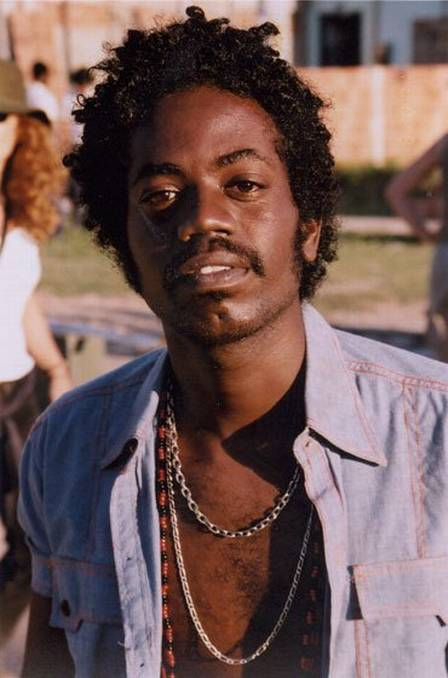

Alexandre Rodrigues é um ator brasileiro. Fez sucesso atuando como Buscapé do filme Cidade de Deus.
Informação de Destaque:Nascimento: 21 de maio de 1983 (idade 40 anos), Rio de Janeiro
Alice Braga
Alice Braga Moraes é uma atriz brasileira. Estrelou filmes brasileiros, como Cidade de Deus, Entre Idas e Vindas e Cidade Baixa e estrangeiros, como I Am Legend, Repo Men, Predators, Elysium, Redbelt, Suicide Squad e o mais recente The Shack, além da série Queen of the South.
Informação de Destaque:Nascimento: 15 de abril de 1983 (idade 40 anos), São Paulo
Douglas Silva
Douglas Silva, também conhecido pela sigla DG, é um ator e cantor brasileiro, vencedor do prêmio de Melhor Ator pelo Festival de Havana
Informação de Destaque:Nascimento: 27 de setembro de 1988 (idade 35 anos), Rio de Janeiro
Phellipe Haagensen
Traduzido do inglês-Phellipe Haagensen Cerqueira é um ator brasileiro mais conhecido por seu papel de Bené no filme de 2002, Cidade de Deus. Ele é o irmão mais novo do modelo e ator Jonathan Haagensen. É membro da banda Guerreiros de Jorge.
Informação de Destaque:Nascimento: 26 de junho de 1984 (idade 39 anos), Rio de Janeiro
Darlan Cunha
Darlan Cunha Christovam, mais conhecido apenas como Darlan Cunha, é um ator brasileiro. Ficou conhecido por interpretar Filé no filme internacionalmente premiado Cidade de Deus e Laranjinha na série Cidade dos Homens
Informação de Destaque:Nascimento: 16 de setembro de 1988 (idade 35 anos), Rio de Janeiro
Leandro Firmino

Leandro Firmino da Hora é um ator brasileiro mais conhecido por fazer o papel de Zé Pequeno no filme brasileiro Cidade de Deus
Informação de Destaque:Nascimento: 23 de junho de 1978 (idade 45 anos), Rio de Janeiro,